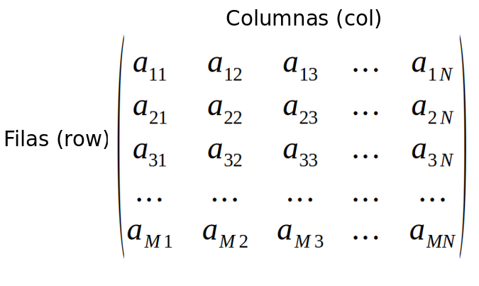

Matrices
Una matriz es similar a un vector pero en dos dimensión que contiene elementos de un solo tipo. Las dimensiones de una matriz son el número filas por el número de columnas.
Crear matrices
Se pueden crear matrices con la función matrix().
## La dimensión de la matriz se puede definir utilizando los argumentos nrow y ncol
x <- matrix(1:9, nrow = 3, ncol = 3)
## Verificamos la clase del objeto
class(x)
## Puede contener caracteres
matrix("a", 3, 2)
## Podemos acomodan la matriz por filas
matrix(1:12, 3, 4, byrow = TRUE)
## La longitud de los datos tiene que ser un submúltiplo o múltiplo del número de filas
matrix(c("A","K"), 3, 3)
Nota: No es necesario aportar valor para ambas dimensiones. Si se proporciona una de las dimensiones, la otra se infiere de la longitud de los datos.
Se pueden crear matrices con la función dim().
## A partir de un vector podemos crear una matriz
## La longitud del vector tiene que ser igual a la multiplicación de las filas por las columnas
x <- c(3,10,6,5,7,8)
## Transforma el vector x a una matriz de 2x3
dim(x) <- c(2,3)
Se pueden crear matrices con la función rbind().
## Cada vector corresponderá a una fila
## Crear una matriz de 2 x 3
rbind(c(2,3,4), c(5,6,8))
## Si tenemos dos vectores los podemos unir por filas
x <- c(2,4,5,6,7)
y <- c(4,6,8,2,10)
rbind(x, y)
Se pueden crear matrices con la función cbind().
## Cada vector corresponderá a una columna
## Crear una matriz de 2 x 3
cbind(c(2,3,4), c(5,6,8))
## Si tenemos dos vectores los podemos unir por columnas
x <- c(2,4,5,6,7)
y <- c(4,6,8,2,10)
cbind(x, y)
Acceder a los elementos de una matriz
Podemos acceder a los elementos de una matriz utilizando los corchetes [], poniendo primero el número de fila y en seguida el número de columna separados por una coma.
## Crear una matriz 3 x 4
x <- matrix(1:12, 3, 4)
## Acceder a elemento de la fila 2 y columna 4
x[2,4]
## Seleccionar la 3ra fila
x[3,]
## Seleccionar la 2da columna
x[,2]
## Seleccionar toda la matriz excepto la 2da fila y la 3ra columna
x[-2,-3]
## Seleccionar de la fila 2 a la tres y de la columa 3 a la 4
x[c(2,3),c(3,4)]
Dimensión, número de filas y columnas
Para conocer la dimensión de una matriz se utiliza la función dim() que devolverá el número de filas y columnas, si se quiere obtener independientemente el número de filas se utiliza la función nrow() y para el numero de columnas es mediante la función ncol().
## Crear una matriz 3 x 4
x <- matrix(1:12, 3, 4)
## Dimensión de una matriz
dim(x)
## Acceder a el número de filas mediante la función dim()
dim(x)[1]
## Acceder a el número de columnas mediante la función dim()
dim(x)[2]
## Acceder a el número de filas mediante la función nrow()
nrow(x)
## Acceder a el número de columnas mediante la función nrow()
ncol(x)
Nombres de filas y columnas
Podemos agregar nombres a las filas y las columnas, los cuales no se podrán repetir ya que funcionan como identificadores.
## Crear una matriz 3 x 4 con nombres de filas y columnas
x <- matrix(1:9, nrow = 3, dimnames = list(c("A","B","C"),c("X","Y","Z")))
## Ahora podemos acceder a los elemntos de la matriz mediante los nombres de filas y columnas
x["C","Z"]
## Podemos conocer el nombre de las filas
rownames(x)
## Cambiar el nombre a las filas
rownames(x) <- c("uno","dos","tres")
## Cambiar el nombre de la 3ra filas
rownames(x)[3] <- c("cinco")
## Podemos conocer el nombre de las columnas
colnames(x)
## Cambiar el nombre a las columnas
colnames(x) <- c("azul","verde","rojo")
## Cambiar el nombre de la 2da columna
colnames(x)[2] <- c("gris")
Opreaciones con matrices
También podemos realizar operaciones con matices numéricas.
## Crear una matriz 3 x 4
x <- matrix(1:12, 3, 4)
## Matriz transpuesta t()
t(x)
## Suma 5 a cada elemnto de la matriz
x + 5
## Eleva al cubo cada elemnto de la matriz
x ^ 5
## Sumar dos matrices
y <- matrix(1:12, 3, 4)
x + y
## Sumar los elementos por fila
rowSums(x)
## Obtener la media por fila
rowMeans(x)
## Sumar los elementos por columna
colSums(x)
## Obtener la media por columna
colMeans(x)
Nota: Una matriz traspuesta t() es el resultado de reordenar la matriz original mediante el cambio de filas por columnas y las columnas por filas en una nueva matriz.